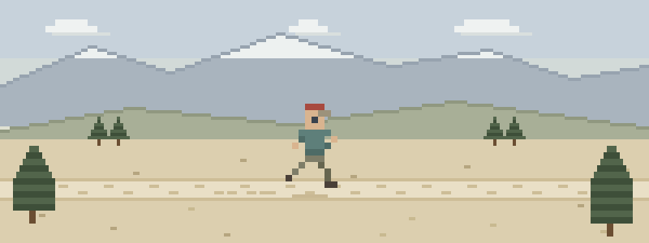

When a run stops being a run
- The runner who isn’t sleeping. Face-down off the edge of the trail, making a noise like a bear. That snore is an airway, and it’s asking for help now — not after you find signal.
- Noon, exposed ridge. Your partner is weaving and answering questions from some other conversation. Heat stroke gets cooled where it happens, with what you have.
- The bonk that isn’t. Sweaty, confused, and swearing she’s fine — if she can still swallow, sugar now beats diagnosis later.
Five lessons for people who travel light
This order front-loads what running trails serve up:
- Airway & Breathing — positioning saves lives with zero equipment
- Heat Illness — cool first — the walking decision kills
- Medical Emergencies — sugar, chest pain, and the ones with no mechanism
- Patient Assessment — a system that works in a race vest
- Evacuation — when to run for help and what to know before you go
Then pressure-test it
Interactive scenarios — one decision at a time, tempting mistakes included, debrief at the end:
- Snoring Isn’t Sleeping — the airway you can hear
- Cool First — heat stroke, cooled in place
- Sugar First — the closing window
The certification question, honestly. “Wilderness First Aid” isn’t a regulated credential. No government body defines what a WFA card means — it means whatever the company that printed it says it means. What counts in front of a patient is whether you can do the work. This course teaches the work, free, and issues a record of completion — not a certificate, and we won’t pretend otherwise. If a race requires medical volunteers to hold a provider’s card, take their class — this is the fluency underneath it. If nobody requires you to hold a card, what you need are the skills, not the laminate.
Mid-run questions
What can you actually do with race-vest supplies?
More than you’d think. The two highest-yield moves on a running trail need no equipment at all: opening an airway with positioning, and cooling an overheated brain with water and shade. Your spare layer is a pressure dressing; your gels treat a sugar crash. The gap is knowledge, not gear.
Heat exhaustion or heat stroke — where’s the line?
The brain. Cramps, nausea, and misery with a working mind is heat exhaustion — rest, shade, fluids. The moment your partner stops making sense it’s heat stroke, and the treatment is aggressive cooling right where they are. The walk-to-the-car decision is the one that kills.
Should runners carry anything at all?
A pair of gloves and an elastic wrap earn their few grams. Cheaper still: knowing your partners’ medical stories — the diabetes, the bee allergy, the heart history. Start from the kit checklist and cut ruthlessly.
What this is
Fifteen lessons, a 40-question knowledge check, sixteen practice scenarios, a printable field reference card, and a kit checklist. Free, no account, nothing recorded about you, source on GitHub. It teaches decision-making, not hands-on skill — practice the hands-on parts on a real, padded, complaining friend.
Same trails, different speeds: thru-hikers & long-distance trekkers · bikepackers & gravel cyclists · canyoneers & slot canyon explorers